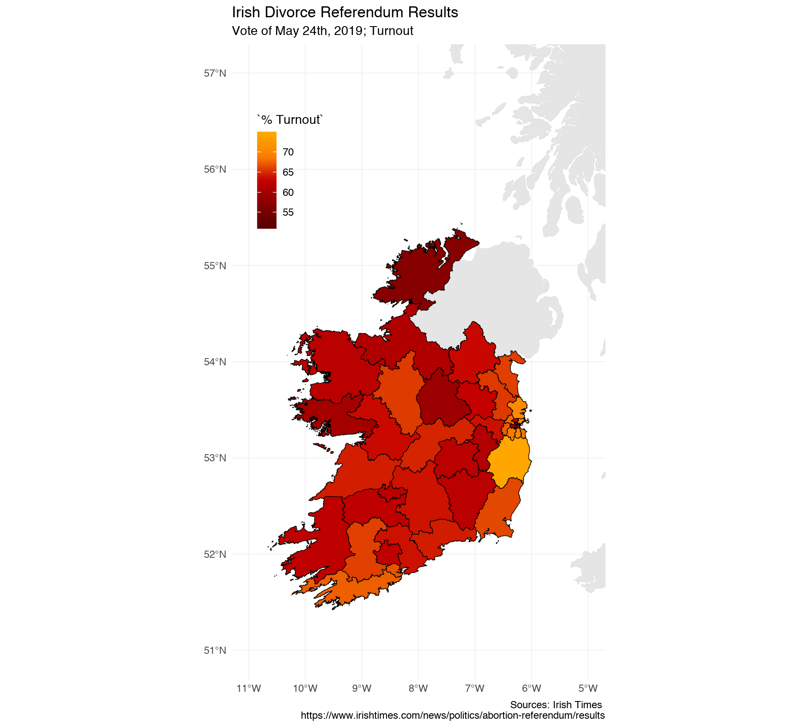

Visualizing the Irish Divorce Referendum in R
A while ago, I wrote a blog post on visualizing the results of the UK elections in 2017 (quite a while ago!). After the Irish elections and divorce referendum on Friday last, I thought it would be a nice opportunity to do something similar with Irish political data.
For a little background, there were two amendments proposed in the referendum. The first was related to removing from the Constitution the length of time a married couple have lived apart before they are granted a divorce, and the second proposal was to remove the section of the constitution that does not recognise divorces registered outside Ireland. The vote passed by 82%. Before, the Irish constitution required that spouses live separately for four of the previous five years in order to be granted a divorce. The constitution had prevented people who had gotten a divorce in other countries from getting married again during the lifetime of their former spouse. So yay, all that crap is gone.
As for plotting this in R, it’s quite straightforward. There two interesting things in this for me: using two layers of geom_sf() and having to use Cairo/X11 because plotting this using the defaults on the Mac I’m using was taking forever.1
We’ll use these libraries:
library(tidyverse); library(rvest); library(magrittr); library(janitor)
library(rnaturalearth); library(sf)I’ll also use the paletteer package for something later on, but it’s not required.
Getting the Spatial Data
There is a pretty decent website for Open Irish Data at https://data.gov.ie/dataset, which I’ve just discovered and can’t wait to explore! They have some datasets of Irish political constituencies that we can use. We can get these like so:
constituencies <- read_sf("https://data-osi.opendata.arcgis.com/datasets/ef0c0924d5ea4a0d875b5407d39eea03_0.geojson") %>%
select(Constituency = MAX_CON_NA, geometry)Let’s have a look at this:
head(constituencies)
## # A tibble: 6 x 2
## Constituency geometry
## <chr> <MULTIPOLYGON [°]>
## 1 Laois (3) (((-7.252613 53.14369, -7.252545 53.14369, -7.252087…
## 2 Carlow-Kilkenny (5) (((-7.027801 52.8097, -7.027535 52.80972, -7.027112 …
## 3 Limerick (3) (((-8.740033 52.67553, -8.739923 52.67551, -8.739376…
## 4 Limerick City (4) (((-8.452618 52.68973, -8.452593 52.68971, -8.452294…
## 5 Longford-Westmeath… (((-8.015205 53.58107, -8.016249 53.58253, -8.017917…
## 6 Louth (5) (((-6.516136 53.7667, -6.516245 53.76672, -6.516609 …Not bad, but those constituency names are going to need a clean up. Easy 😎
constituencies <- constituencies %>%
mutate(Constituency = str_remove(Constituency, "\\)"),
Constituency = str_remove(Constituency, "\\("),
Constituency = str_remove(Constituency, "[0-9]"),
Constituency = str_trim(Constituency),
Constituency = stringi::stri_trans_general(Constituency, "Latin-ASCII"))Getting the Referendum Data
I’m sure these will eventually be published somewhere official, but for now we can scrape ’em. The Irish Times had a nice table of results at the url below, so we can scrape these.2
it_result <- read_html("https://www.irishtimes.com/news/politics/abortion-referendum/results") %>%
html_nodes("#abortiontable") %>%
html_table(fill = TRUE) %>%
.[[1]] %>%
filter(Constituency != "Total")So what does this look like?
head(it_result)
## # A tibble: 6 x 11
## Constituency Verdict Electorate `Total poll` `% Turnout` `Invalid ballot…
## <chr> <chr> <chr> <chr> <chr> <chr>
## 1 Carlow-Kilk… YES 112,704 69,860 61.99% 231
## 2 Cavan-Monag… YES 91,602 58,067 63.39% 163
## 3 Clare YES 83,225 53,576 64.37% 169
## 4 Cork East YES 85,643 54,639 63.80% 148
## 5 Cork North-… YES 84,412 52,713 62.45% 166
## 6 Cork North-… YES 68,830 45,379 65.93% 131
## # … with 5 more variables: `Valid poll` <chr>, `Votes Yes` <chr>, `Votes
## # No` <chr>, `% Yes` <chr>, `% No` <chr>Not so bad, we have everything we need here, once we join it with the spatial data. There are a few small changes & clean-ups we’ll make:
it_result <- it_result %>%
mutate_all(str_remove, "[,%]") %>%
mutate_at(.vars = c(3:11), .funs = as.numeric) %>%
mutate(Constituency = ifelse(
Constituency == "Limerick County", "Limerick", Constituency)
)div_results <- full_join(it_result, constituencies) %>%
rename(perc_yes = `% Yes`, perc_no = `% No`)Plotting the Results
As a quick aside, if geom_sf() is slow for you, try this:
X11(type = "cairo")I’d like to put a map of the general area (Ireland & Great Britain) in the background, too. Since our spatial data doesn’t have any of this info, we can get it with the rnaturalearthhires package.
ireland <- rnaturalearthhires::countries10 %>%
st_as_sf() %>%
filter(SOVEREIGNT %in% c("Ireland", "United Kingdom"))We can put this behind our data layer, creating a nice effect. I’m sure this would look a whole lot nicer if I wasn’t going through the whole plotting mess with geom_sf() on the Mac, but if you run this code on Windows, it’ll probably look pretty nice (first time I’ve ever recommended Windows over anything else for something R-related).
div_results %>%
ggplot() +
geom_sf(data = ireland, colour = "grey 88", size = 0.2) +
geom_sf(aes(fill = perc_yes), colour = "black", size = 0.2) +
coord_sf(xlim = c(-11, -5), ylim = c(51, 57)) +
scale_fill_viridis_c(name = "% Yes") +
theme_minimal() +
theme(legend.position = c(0.15, 0.8),
legend.background = element_blank()) +
labs(title = "Irish Divorce Referendum Results",
subtitle = "Vote of May 24th, 2019",
caption = "Sources: Irish Times \n https://www.irishtimes.com/news/politics/abortion-referendum/results")
As you can see, the highest percentage of ‘Yes’ is in the Dublin area, not really a surprise. Other higher ‘Yes’ areas are Cork and Galway, again not a big surprise. That’s Donegal up there in the top-left corner with the lowest vote, for those of you not familiar with the geography of Ireland.
Turnout
Something else interesting might be the turnout. The viridis scales are great and everything, but they’re a little boring sometimes…how about the House of Lannister palette from the gameofthrones package? (Accessed through paletteer).
div_results %>%
ggplot() +
geom_sf(data = ireland, colour = "grey 88", size = 0.2) +
geom_sf(aes(fill = `% Turnout`), colour = "black", size = 0.2) +
coord_sf(xlim = c(-11, -5), ylim = c(51, 57)) +
paletteer::scale_fill_paletteer_c(gameofthrones, lannister) +
theme_minimal() +
theme(legend.position = c(0.15, 0.8),
legend.background = element_blank()) +
labs(title = "Irish Divorce Referendum Results",
subtitle = "Vote of May 24th, 2019; Turnout",
caption = "Sources: Irish Times \n https://www.irishtimes.com/news/politics/abortion-referendum/results")
Turnout was higher in the ‘higher Yes’ parts of the country, suggesting those who wanted to vote ‘Yes’ were more motivated to do so as opposed to voting ‘No’.